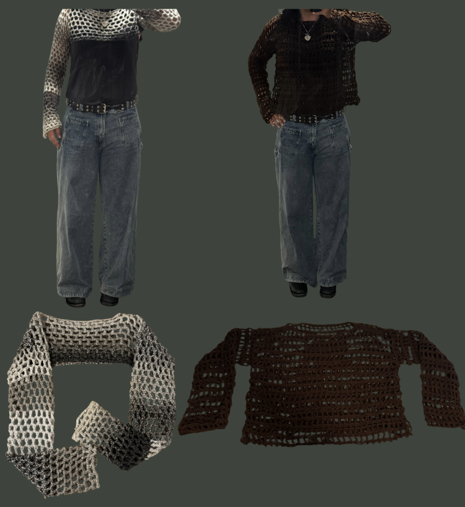

Printed Couture
Project exploring how fashion, code, and digital fabrication can converge to create something innovative and wearable. We designed a custom lace system using principles of repetition, transformation, and recursion to generate intricate, code-based lace patterns. These were 3D printed and sewn directly into a dress, blending the delicate beauty of traditional lace with the bold aesthetics of computational design.
Our inspirations included Iris van Herpen’s sculptural futurism, Schiaparelli’s FW25–26 collection (especially Looks 20, 22, and 30), and Philip Beesley’s organic, interactive architectural textures. We used Blender, Adobe Illustrator, and PrusaSlicer to test multiple iterations, eventually landing on a two-layer print technique that sandwiched mesh fabric between filament layers, allowing the lace to remain flexible and sewable.
This project investigates the intersection of fashion and computational design as a space for physical, wearable innovation. Inspired by natural forms, futuristic silhouettes, and the recursive beauty of algorithms, we aimed to reimagine lace not as a handwoven textile, but as a digitally generated structure. Using generative patterns and 3D printing, we challenged conventional fashion production by embedding code into fabric, making something simultaneously ornamental and functional. .The result is a dress that merges handmade craft with machine precision, showcasing how digital tools can be used not just for prototyping, but for direct creation. This work stands as a testament to how collaboration, iteration, and interdisciplinary thinking can shape the future of design.

Woven Gradients
This project showcases two handmade pieces of clothing that explore texture, color transitions, and the creative possibilities of yarn work. The first piece, a hand-crocheted bolero, uses yarn that shifts gradually through a spectrum of grey tones, creating a soft ombré effect. The open, airy stitch pattern makes it lightweight and flexible, with the gradient adding depth and movement to the design. The second project is a simple brown sweater, highlighting how specific crochet patterns can make a sweater more breathable for everyday wear. While each garment stands on its own, both share an emphasis on comfort, individuality, and the tactile qualities of handmade work. The bolero shows the process of crochet and the beauty of gradual color change, while the sweater reflects creativity and pattern work since each row of yarn is a different stitch. Together, they represent a personal approach to fashion-making, one that values time, craft, and the unique character of each piece.